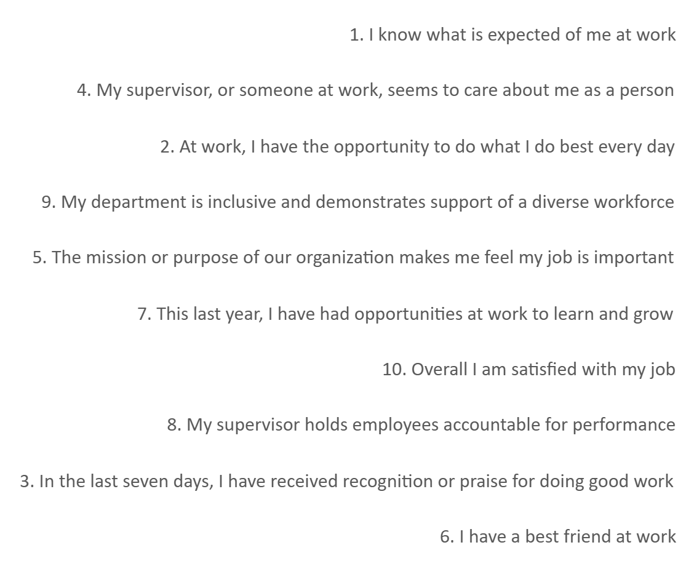

Workforce Capacity Planning
> Sentiment distribution analysis on Seattle Department of Public Health workforce data — isolating an Appreciation Gap driving clinical staff churn that blended average scores had been hiding entirely.
Job Clarity Score
High
Clinical Role Alignment
Supervisor Support
Strong
Key Retention Anchor
Appreciation Gap
Critical
Primary Churn Driver
Survey Parameters
12+
Full Distribution Analyzed
Public Health Sector — Real Healthcare Workforce Data
This project uses real data from the Seattle Department of Public Health — not a synthetic HR dataset. The Likert sentiment distribution methodology, Job Clarity Index, and clinical talent retention framework map directly to hospital system HR analytics, health plan workforce planning, and public health agency staffing operations. Clinical talent is hard to replace; the cost of losing a specialized public health worker is measured in program continuity and patient care capacity, not just recruitment fees.
Interactive Dashboard
Data Engineering & Analysis
Power Query Normalization — Retiring Legacy VBA
Extracted raw survey responses from the Seattle Department of Public Health and built a Power Query ETL pipeline to handle nulls, trailing spaces, and inconsistent survey categories — replacing fragile legacy VBA macros that were causing analytical delays between baseline measurements. The pipeline now runs without manual intervention.
Sentiment Distribution — Rejecting the Average Score Trap
Designed 100% stacked bar charts in Excel to visualize the full distribution of "Strongly Agree" to "Strongly Disagree" across 12+ survey parameters. This immediately surfaced the Appreciation Gap — a finding completely invisible in mean-score reporting. A department averaging 3.0 can contain both highly engaged clinical staff and imminent churners simultaneously. Mean scores destroy that signal.
Clinical Sentiment Drivers — Cross-Referencing Job Clarity
Cross-referenced job clarity scores against peer recognition and appreciation scores across clinical departments. The data proved that operational clarity was high — employees understood their roles — but the emotional connection to coworkers was a significant and underappreciated risk for long-term retention of specialized public health staff.
Clinical Retention Strategy
- • Deploy formal peer recognition programs to bridge the Appreciation Gap — lateral connection between frontline clinical staff is the primary unmet need.
- • Launch structured team-building initiatives targeted at unit-level peer connection, not organization-wide culture programs.
Operational Loop
- • Implement pulse-check surveys (3-question rapid cycles) to track sentiment recovery in real-time across clinical units — not just at annual review cycles.
- • Refine onboarding to maintain high job-clarity scores as new clinical staff join, preventing the appreciation gap from forming at the earliest tenure stage.
Technical Toolkit
Impact Summary
"By moving beyond raw averages and analyzing the full distribution of sentiment, specific social friction points were identified that standard aggregate metrics hide entirely. The finding wasn't in the mean — it was in the spread."
GitHub RepositoryVisual Evidence

Sentiment Distribution
100% Stacked Analysis — 12 Workforce Parameters

Appreciation Gap
Supervisor Support vs. Peer Recognition Variance